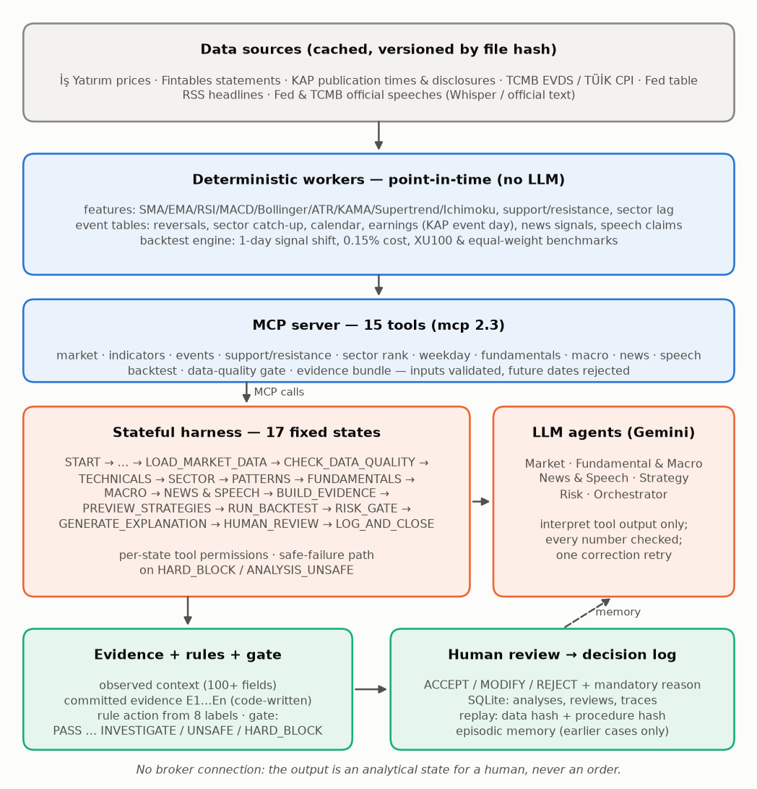

CSE-481 Engineering Economics — Term Project 2026
An Evidence-First Agentic Harness for BIST 100 Analytics
Final Technical Report
Habib VURAL
20230808618
Instructor: Dr. Alper Özcan
November 2026
Educational research project. Historical evidence only; not a forecast and not investment advice.
Final Technical Report — An Evidence-First Agentic Harness for BIST 100 Analytics
Educational research output for CSE-481. Historical evidence only: not a forecast, not investment advice. Returns are nominal TRY.
Abstract. We built a research and decision-support system for 30 BIST 100 stocks over November 2021 –
November 2026.
- Data and research. Deterministic, point-in-time tools load prices, quarterly statements aligned to their real
KAP publication times, macro series, KAP news and central-bank speeches. Five research scenarios test technical
reversals, sector catch-up, calendar patterns, earnings reactions and macro/news context against XU100, peers,
costs, out-of-sample halves and multiple-testing correction.
- Harness. The tools are exposed through an MCP server to a fixed 17-state harness:
- rules choose one of eight analytical labels;
- a quality gate can block or downgrade an analysis;
- an LLM (Gemini) may only explain committed evidence, and every number it writes is checked;
- a human reviewer makes the final decision;
- everything is logged for replay.
- Main results.
- Most "patterns" vanish against the market benchmark; the few robust effects are small.
- No strategy variant beats an equal-weight buy-and-hold after costs.
- In a controlled experiment, adding structure (tools → state machine → evidence and gate) moved the same LLM from
17% to 100% agreement with the evidence-based label, without fabricated numbers.
- The system's own checks found and fixed ten design errors, two of them look-ahead problems in the earnings data
found in a final review; correcting them made the earnings reaction clearer and the best strategy weaker.
1. Problem and purpose
The brief (§2–4) asks for a system that helps a human analyse BIST stocks without pretending to predict prices. A
language model can write a confident paragraph about any stock. What makes such a paragraph useful is:
- the data behind it were known at that time;
- the calculations can be repeated;
- the actions are limited;
- the evidence can be inspected;
- historical claims have been tested;
- a human can disagree.
We therefore set the goal as an evidence-backed analytical state, not a buy/sell signal. For a stock and a date,
the system returns one of eight labels (HOLD, WATCH, INVESTIGATE, three candidate labels, REJECT_SIGNAL,
ANALYSIS_UNSAFE), the evidence that supports it, the warnings that weaken it, and a backtest of the related rule.
The human decides. There is no broker connection.
Two questions run through the project:
- The research question: which technical, sector, calendar, fundamental and contextual signals carried
historical information on BIST?
- The engineering question: how should an LLM be embedded so that it cannot invent numbers, skip checks or turn
an opinion into a conclusion?
2. Data and point-in-time design
- Universe. 30 study stocks from ten sectors (
config/universe.csv), plus four BIST 100 peers used only for
sector medians. The list is the 2026 one, which creates a survivorship caveat. Membership is re-checked at the
start of every run (brief §5): all 34 are BIST 100 members for 1 Oct – 31 Dec 2026 (Borsa İstanbul periodic
changes, KAP 21 Sep 2026; none of the 27 removed shares is ours).
- Prices. Daily İş Yatırım series, adjusted for corporate actions, 1 Nov 2021 – 6 Nov 2026. Validated
against Yahoo; the quality report found no broken day.
- Fundamentals. Fintables quarterly statements (30 files). A quarter becomes usable only on its KAP event
day: the first trading day after the real publication time, fetched for all 545 filings.
- 88% of filings appear after 18:00.
- 15% came after the legal deadline, mostly the first inflation-accounting (TMS 29) statements.
- Assuming legal deadlines would therefore have leaked information.
- Fintables keeps the latest version of each figure. For the 24 companies that apply inflation accounting it shows
restatements of 2022Q4 – 2023Q3 that were published a year later, and it re-expresses later figures in the money
of the latest balance sheet (verified against 20 published figures). Each figure is therefore used only from
the day its version became public, comparisons stay within one unit, and amounts are shown in the money of their
report.
- Macro. TCMB EVDS (USD/TRY, EUR/TRY, policy rate), TÜİK CPI (usable from the 3rd of the next month) and the Fed
target range (usable from the first BIST day after the announcement).
- Unstructured text.
- 12,905 KAP material-event disclosures and RSS headlines, tagged by keyword rules.
- The Fed press conference of 28 Oct 2026, transcribed with Whisper (96.6% match to the official transcript).
- The official text of the TCMB briefing of 12 Nov 2026.
- Numerical claims in speeches are checked against the data tools. Only verified claims can become evidence.
The data dictionary (Report 0) documents 453 fields in 21 datasets with units and point-in-time rules. A test
fails if any field is undocumented. Two layers enforce the point-in-time rules:
- construction: every feature uses only past closes; forward returns are used only when their window closed
before the analysis date; every fundamental figure carries the date its version was published;
- the quality gate: it blocks any analysis whose evidence has a source date after the analysis date.
3. System architecture

Figure 1 shows the layers. The design follows the brief's principle (§38): the agent orchestrates deterministic
tools; it does not invent or predict financial facts.
- Workers and tools. All calculations are deterministic Python modules with caches. The MCP server exposes 15
of them. Each validates its inputs and refuses dates after the last data day, and the error text is returned to the
agent.
- State machine. The 17 states of brief §23 are fixed in code. Each state opens only its permitted tools; any
other request is blocked and counted. Data quality, the risk gate, human review and logging are mandatory, even on
the safe-failure path taken after a hard block.
- Agents. Six LLM roles (Market, Fundamental & Macro, News & Speech, Strategy, Risk, Orchestrator) interpret tool
results in their state.
- The action. It is not chosen by an LLM. Rules (
evidence.decide) combine the conditions (laggard, strong
sector, recovering, earnings tercile, technical events, conflicting signals, shock, negative news) with the gate
status.
- Evidence. The bundle separates the full observed context (100+ fields) from the committed evidence: short
sentences (E1, E2, …) written by code from numbers.
- The Orchestrator's explanation may cite only these.
- A validator compares every number in every agent's text with the tool outputs. If a number is unsupported,
the agent gets one correction request; whatever remains is logged.
- Human and log. The reviewer must give ACCEPT / MODIFY / REJECT with a reason. The decision log (SQLite) stores
the full bundle, tool calls, gate, explanation, model name, data-file hashes and a procedure hash, so any decision
can be replayed later.
- Universe scan (brief §33). A question about the whole universe ("which stocks lag a strong sector but may be
entering a catch-up state?") runs the same rules for all 30 stocks without an LLM, names the candidates and why
the nearest others fail, and sends at most three candidates through the full harness. The scan is logged and can
be replayed (Report 6, §2.5).
4. Research findings
Table 1. Five research scenarios in one table (details in Reports 1–5)
| research scenario (report) |
key result |
robustness |
harness use |
| 1 Technical reversals |
excess vs XU100 of 20 event types: -0.40 to +0.32% in 5 days; raw gains ≈ any-day drift (+1.08%) |
no type with q < 0.05; 8/20 keep sign out of sample; combined conditions (confirmed / against the trend): 0 of 32 significant |
context only |
| 2 Sector catch-up |
harness rule (no shock, strong sector, recovering, not weak earnings): +0.82 pt vs peers in 10 days (baseline +0.15) |
only q < 0.05 result; +0.88 / +0.72 in the two halves; ~half still lag after 20 days |
POTENTIAL_CATCH_UP_CANDIDATE |
| 3 Weekday & multi-day |
Wednesday -0.41, Thursday +0.34 pt vs other days, in all ten sectors; Thursday after a Fed decision +0.96 pt (pre-registered, q = 0.025); big down days continue (−1.35 pt in 5 days) |
Wed-buy/Thu-sell: +201% before costs, +42% at 0.15% (XU100 +647%) |
not used for actions |
| 4 Earnings reaction |
top − bottom net-income third: +1.26 pt before (q = 0.15), +2.01 pt on the event day (q = 0.025); operating income +1.95, revenue +0.45; pre-registered H2 EBITDA-margin change +2.03 (q = 0.025), H1/H3/H4 not confirmed |
event day +2.01 pt with previous-quarter cut-offs, +2.01 pt ranking only companies already reported; no drift after day 4 (net-margin change +5.07 pt over days 1–20 is borderline, q = 0.058) |
FUNDAMENTAL_IMPROVEMENT_CANDIDATE |
| 5 Macro, news, speech |
XU100 ×7.5 in TRY but ×1.4 in USD; macro risk flag lowered returns (C 213% → D 163%); only 'new contract' KAP news moves prices (+0.5 pt) |
3 of 33 speech claims verified and admitted as evidence |
context, gate warnings, blockers |
- Benchmarks. The common thread is the benchmark. In five years XU100 rose 7.5× in nominal TRY (1.4× in USD),
so almost any bullish signal "worked" in raw terms. Measured against XU100 or sector peers, most effects shrink to
a few tenths of a percent.
- Robust findings. Few effects survive correction and keep their sign in the second half:
- the harness's catch-up rule (+0.8 pt vs peers in 10 days, both halves);
- the earnings reaction on the disclosure day (+2.0 pt top vs bottom third, profitability rather than sales),
including the EBITDA-margin change, which was written down as a hypothesis before it was tested;
- the Wednesday weakness;
- short-term continuation after big down days and over weekends.
- Robust but not tradable. The Thursday strength, seen in all ten sectors and partly linked to central-bank
decisions (most clearly the first trading day after a Fed decision), is the most stable weekday effect. It is
not tradable after costs.
- Non-findings are reported as carefully as findings:
- no technical reversal type beats the index, with or without the spec's confirming indicators (20 event types,
8 of them added and pre-registered for the spec's missing families, and 32 combined-condition tests; none
significant);
- negative KAP news categories have no average effect;
- the macro risk flag lowered strategy returns;
- revenue growth carries no price information under high inflation;
- there is no reliable price move before earnings filings once only published figures are used.
- Türkiye context. Each report places its results in dated events, verified by search where it matters:
- the 2021 currency crisis;
- negative real rates in 2022;
- the February 2023 earthquake closure;
- the 2023–24 tightening;
- inflation accounting from 2023 year-end;
- the March 2025 political shock;
- the September 2026 fund liquidations.
5. Strategies and backtests
Table 2. Strategy variants A–E after 0.15% one-way costs (Report 6 §1; first half 2022-10 – 2024-11,
second half 2024-11 – 2026-11)
| strategy |
full % |
first half % |
second half % |
Sharpe (full) |
max DD % |
entries |
| A_teknik |
181 |
176 |
2 |
1.20 |
-29 |
594 |
| B_sektor |
188 |
164 |
9 |
1.29 |
-24 |
688 |
| C_temel |
213 |
175 |
14 |
1.44 |
-21 |
627 |
| D_makro |
163 |
145 |
7 |
1.30 |
-21 |
627 |
| E_haber |
176 |
145 |
12 |
1.37 |
-20 |
611 |
| XU100 |
189 |
118 |
33 |
– |
– |
– |
| equal-weight buy & hold |
342 |
199 |
48 |
– |
– |
– |
- Strong first half. All variants were profitable in the first half (the inflation rally); none beat
equal-weight buy-and-hold. C, which adds the fundamental filter, beat XU100 by 57 pt there. Before the
point-in-time fix it also appeared to beat equal-weight buy-and-hold, using earnings information not yet public.
- Weak second half. All variants earned only 2–14% while XU100 rose 33% and equal-weight 48%.
- Full period. No variant beat equal-weight buy-and-hold (342%). The macro and news layers (D, E) reduced
returns with almost no drawdown benefit.
- Costs. Raising the one-way cost from 0.15% to 0.30% removes 28–54 pt.
- Inside sectors and per trade. Against a sector-neutral benchmark (same sector weights, all sector members in
equal weight) the variants are within ±13 pt, except the sector catch-up variant B, 24 pt behind. Only 44–49% of
closed trades win after costs.
- Walk-forward. Picking every six months the variant with the best Sharpe over the past year earned +52% over
the three out-of-sample years, the same as XU100 (+53%) and below always holding C (+63%); the past year's winner
was the next window's best only once in six.
- The engine passes a deliberate look-ahead test: a signal that "knows" today's return earns an absurd
5 × 10¹¹ % without the one-day shift and +11% with it.
This is the project's clearest example of prediction ≠ profitable strategy: several signals have small,
statistically real effects, yet a long-only rule built on them does not beat simply holding the market after costs.
6. Harness experiments A–E
Table 3. What each layer adds (6 cases × 2 runs, Gemini 3.1 Flash-Lite, temperature 0; Report 6 §3)
| version |
same action as evidence-based reference % |
unsupported conclusion % |
fabricated numbers % |
evidence completeness % |
reproducible % |
tool calls / run |
LLM calls / run |
| A |
16.7 |
50.0 |
0.0 |
45.8 |
100.0 |
0.0 |
1.0 |
| B |
50.0 |
16.7 |
0.0 |
38.0 |
100.0 |
3.2 |
4.0 |
| C |
50.0 |
0.0 |
0.0 |
49.7 |
100.0 |
24.8 |
5.0 |
| D |
100.0 |
0.0 |
0.0 |
97.5 |
100.0 |
22.7 |
5.3 |
| E |
100.0 |
0.0 |
0.0 |
97.5 |
100.0 |
22.7 |
5.3 |
The same model (Gemini 3.1 Flash-Lite, temperature 0) was run in five configurations on six cases chosen to expose
failure modes, twice each. The runs took place on 19–20 November, before the point-in-time fix (Section 10). With the
corrected data the six cases keep their actions and gate results, but some evidence numbers changed (Report 6 §3);
the experiment will be re-run once after the remaining corrections.
- A — raw LLM. Text in, label out. It gave the evidence-based label in 2 of 12 runs, and half of its labels were
unsupported (a candidate label despite a shock or negative news).
- B — LLM + tools. It used about 3 tool calls per run and never a backtest. It once called a stock with a −10%
shock and two negative disclosures a "reversal candidate".
- C — state machine. It forced about 25 tool calls and a backtest each time and removed unsupported labels, but
still chose conservative labels instead of the evidence-based ones.
- D/E — rules, evidence and gate. They matched the reference by construction and explained 97.5% of the
committed evidence. A–C covered 38–50%.
After correcting a validator false alarm (moving-average windows counted as numbers), no version fabricated
numbers. Tools fixed the numbers; structure fixed the judgement. Reproducibility was 100% in every version,
but that means consistency, not correctness: version A was consistently wrong.
7. Worked examples: from evidence to an analytical state
Table 4. Six cases, recomputed with the final code
| case |
why |
gate |
action (rules) |
evidence items |
human (Step 14) |
| ASELS 2026-11-06 |
top-third earnings, no shock or negative news |
PASS |
FUNDAMENTAL_IMPROVEMENT_CANDIDATE |
8 |
ACCEPT |
| TURSG 2026-11-06 |
shock day + two negative KAP disclosures; profit turned into a loss |
PASS |
INVESTIGATE |
6 |
ACCEPT |
| PETKM 2026-11-06 |
bullish and bearish technical events in the same 3 days |
PASS_WITH_WARNINGS |
INVESTIGATE |
4 |
ACCEPT |
| KRDMD 2026-11-06 |
earnings candidate, but a −10% shock day 1 day earlier |
PASS_WITH_WARNINGS |
REJECT_SIGNAL |
6 |
MODIFY → FUNDAMENTAL_IMPROVEMENT_CANDIDATE |
| ASELS 2023-02-15 |
earthquake market-closure window |
ANALYSIS_UNSAFE |
ANALYSIS_UNSAFE |
6 |
ACCEPT |
| YOKBOYLE 2026-11-06 |
ticker not in the universe |
HARD_BLOCK |
ANALYSIS_UNSAFE |
0 |
ACCEPT |
Table 5. Committed evidence for ASELS on 2026-11-06 (the only sentences the explanation may use)
| id |
tool |
committed evidence (system output, Turkish) |
| E1 |
calculate_fundamental_change |
Son açıklanan bilanço 2026-09-30 (2026-10-28 görünür): çeyrek net kârı 11.23 milyar TL (bir yıl önce 6.18 milyar TL; ikisi de Eylül 2026 TL'si) -> kâr arttı; yıllık net kâr değişimi %81.6; bir önceki çeyrekte 30 hissenin yıllık kâr değişimine göre üst üçte birde (eşikler: alt üçte bir %-19.0 ve altı, üst üçte bir %50.5 üstü; sektör içi değil) |
| E2 |
get_fundamental_metrics |
Geçmişte üst üçte bir bilançolar açıklama sonrası 5 günde alt üçte birden %2.59 daha iyi (n=131) |
| E3 |
get_news_events |
2026-10-23 olumlu KAP duyurusu (yeni_is_sozlesme): Sözleşme İmzalanması |
| E4 |
get_news_events |
2026-10-26 olumlu KAP duyurusu (yeni_is_sozlesme): Sözleşme İmzalanması |
| E5 |
get_news_events |
2026-11-03 olumlu KAP duyurusu (yeni_is_sozlesme): Sözleşme İmzalanması |
| E6 |
get_news_events |
Son 10 işlem gününde olumsuz KAP duyurusu ve şok yok |
| E7 |
get_macro_context |
Makro: politika faizi %36.0, yıllık TÜFE %29.8 (2026-10), makro risk var (yarı ağırlık) |
| E8 |
run_backtest |
Backtest C_temel (2022-10-27-2026-11-06, maliyet dahil): %213; eşit ağırlıklı al-tut %342, XU100 %189, aynı sektör ağırlıklı kıyas %212, en büyük düşüş %-21, kazanan işlem oranı %49 |
Table 4 shows how the rules turn evidence into a state, and how the system fails safely:
- ASELS (
FUNDAMENTAL_IMPROVEMENT_CANDIDATE, gate PASS). Quarterly profit rose from 6.18 to 11.23 billion TRY
(money of Sep 2026; top third against the previous quarter's cut-offs), there were three new contract disclosures,
and no shock or negative news. The evidence also states the weakness: the related backtest (C) returned 213%,
below equal-weight buy-and-hold (342%), and the macro flag was on.
In the real decision log the human changed this to WATCH for exactly that reason.
- TURSG (
INVESTIGATE). A −10% day, −39.5% in 20 days against −6.0% for XU100, a request for extra time to file
statements, a departing head of internal audit, and a swing from profit to loss. The rules do not call this a
bargain.
- PETKM (
INVESTIGATE). Bullish and bearish technical events in the same three days. The conflicting-signal rule
sends it to investigation instead of picking a side.
- KRDMD (
REJECT_SIGNAL). It meets the earnings-candidate rule (loss → profit), but a −10% shock the day before
blocks the candidate. The candidate is kept as a secondary label so the reviewer sees both.
- ASELS on 15 Feb 2023 (
ANALYSIS_UNSAFE). The earthquake closure. The gate stops the analysis but still
records what was observed.
- YOKBOYLE (
HARD_BLOCK → ANALYSIS_UNSAFE). An unknown ticker. All tools refuse it; the safe-failure path
still runs the gate, an explanation, the human review and the log.
Table 5 is the complete committed evidence of the first case. Every sentence names the tool that produced it, and
the explanation agent may not add a number that is not in these sentences.
8. Decision log, replay and human review
Contents. Every analysis stores what brief §28 lists:
- ticker, sector, dates;
- data-file hashes and a procedure hash;
- tools called, observed context, conditions, history and backtest;
- gate result, action and committed evidence;
- the explanation, the model name, the full agent trace, and the human decision with its reason.
Replay. The two real Gemini analyses in the log (ASELS, 18 Nov 2026; both changed by the human from candidate to
WATCH) were replayed with the final code. The action and the gate were identical. The replay reported a different
procedure hash and one changed data file, the earnings table rebuilt by the point-in-time fix. That is correct:
rules and evidence wording were improved after those decisions, and the earnings data were corrected. Replay thus
separates "the data changed" from "the method changed".
Memory. Episodic memory shows agents up to three earlier cases of the same stock, but only cases with an earlier
analysis date. The missing date filter was one of the bugs found during the experiments.
Human review is also data. In the experiment the reviewer overrode one rejection with the reason "it is in a
position to rise". That is a forecast, and it contradicts the logged shock evidence. The system allows it, by
design, and the stored reason makes the override reviewable later.
9. Seven distinctions the project demonstrates
The brief (§38) lists seven distinctions. Each one appeared in our own results:
- Prediction ≠ profitable strategy. The Wednesday-weak / Thursday-strong pattern is statistically real, but
buying on Wednesday and selling on Thursday turned +201% into +42% after a 0.15% cost, against +647% for XU100
(Report 3). The sector catch-up effect is the most robust finding, yet the strategy built on it only matched
XU100 (Report 2).
- Correlation ≠ causation. Thursday's strength coincides with TCMB and Fed decision days (all 26 rate changes
fell on a Thursday). With the official meeting calendars, holds included, the clearest link is the Fed: the
Thursday after an FOMC decision beat other Thursdays by +0.96 pt (q = 0.025). That is a plausible mechanism,
not a proven cause (Report 3).
- Backtest ≠ future guarantee. Every strategy variant except the rate filter beat XU100 in the first half, and
all of them lagged it in the second (Report 6).
- Historical evidence ≠ investment advice. Even the best-supported label (
POTENTIAL_CATCH_UP_CANDIDATE)
historically beat peers only about 52% of the time. About half of such stocks were still behind after 20 days
(Report 2). The system therefore labels "worth investigating", never "buy".
- LLM confidence ≠ statistical probability. The raw LLM (version A) produced fluent, confident labels and was
wrong in 10 of 12 runs. Its labels were 100% reproducible, which is consistency, not probability (Report 6).
- Fundamental strength ≠ guaranteed price increase. Strong earnings in a stock already above its 200-day
average lost −0.46% over days 0–4, and most of the earnings reaction happens on the disclosure day and the day
after (Report 4).
- Expert commentary ≠ verified fact. Of 33 numerical claims in the Fed and TCMB speeches, 3 could be verified
and only those entered the evidence. The TCMB briefing sounded hawkish while TCMB had just cut rates (Report 5).
10. Problems found and fixed
The system's own safeguards found eight design errors during Steps 14–15, and a final review on 22 November found
two more in the earnings data. Each was fixed together with a test that fails without the fix (full table in
Report 6 §5):
- Memory leak. Episodic memory could show a 2026 decision to a 2023 analysis (look-ahead in memory).
- API change. Gemini 3 tool calls required their "thought signature" to be returned.
- Shock evidence without direction. The evidence said a ±10% day had happened, but not which way it went.
- Misleading profit change. A year-over-year profit percentage hid a remaining loss ("+48%" for a shrinking
loss).
- Inverted hit rate. Historical hit rates of bearish technical events were computed in the wrong direction,
which alone had produced one
INVESTIGATE.
- Speech timing. A speech published after the close entered the same day's analysis.
- Validator false alarm. The numerical validator flagged moving-average window lengths as fabricated numbers.
- Demo log. A demo command wrote to the real decision log.
- Restated figures used too early. Fintables shows inflation-accounting restatements of 2022Q4 – 2023Q3 that
were published a year later; they had been used on the original dates and compared with unrestated figures.
- Ranking with later reporters. A company's earnings third depended on companies that reported weeks later.
For findings 1–8, affected experiment rows were re-run with the real model, except wording-only changes, which are
stated; the validator fix was applied by re-scoring the stored explanations offline. Findings 9–10 changed some
evidence numbers of the experiment but none of its actions; it will be re-run once after the remaining corrections.
They also changed research results: the pre-event earnings move and the ROE drift of Report 4 are no longer
significant, and strategy C's lead over XU100 fell from 53 to 24 pt.
One class of error is not caught automatically: an explanation that cites the wrong evidence id or skips an
item. The numbers were right but the attribution was wrong. That needs an evidence-consistency check or the human
reviewer.
11. Limitations and threats to validity
- Sample.
- 30 stocks over five years, with one strongly trending nominal market.
- Survivorship from the 2026 index list.
- Results in nominal TRY: they are always judged against XU100 or peers.
- Data gaps.
- Around the inflation-accounting switch (2022Q4 – 2024Q1) earnings cannot be ranked: the restated figures were
published a year later.
- EBITDA, leverage, liquidity, cash-flow and daily valuation ratios are computed (statement items checked against
published figures). Only four of them were tested (pre-registered H1–H4 in Report 4); liquidity and EV/EBITDA
were not.
- Fintables keeps only the latest version of each figure, so later corrections are carried back into earlier
periods (one small case found).
- RSS has no history.
- Only two speeches and no instructor-approved video list.
- The TCMB video required a bot sign-in that we did not bypass.
- Method.
- Event thresholds were fixed once and not optimised, so other choices may change single numbers.
- Out-of-sample checks are halves, eight ~6-month windows and one walk-forward selection test; the variants
themselves were designed once, not re-fitted per window.
- Costs are a fixed 0.15% one way, with no market-impact model and 0% interest on cash.
- Keyword rules for news and speech stance are coarse.
- Experiment.
- 6 hand-picked cases, one model, temperature 0.
- The reference label is the rule result, so D/E agreement is not independent evidence that the rules are good.
A human-labelled reference set would be needed.
- Evidence completeness is a heuristic. Latency includes human time.
- The stored explanations predate the point-in-time fix (Report 6 §3).
12. Conclusion and future work
- Research. Careful timing and benchmarks matter more than clever signals. The few effects that survive are
modest (catch-up of temporary sector laggards, the market's quick reaction to profitability news, short-term
continuation), and none of them turns into a strategy that beats buy-and-hold after costs.
- Engineering. Reliability came from structure, not from the model: deterministic tools, a fixed state machine,
rule-chosen labels, committed evidence, a quality gate, number checks, human review and replay. The same model
that was wrong 10 times out of 12 on its own gave the evidence-based answer every time once it was placed inside
that structure.
Future work.
- Test the net-margin drift (Report 4, borderline q = 0.058) and the EBITDA-margin reaction (H2) on new quarters.
- Add an evidence-id consistency check to the validator.
- Collect a human-labelled reference set for the harness experiment.
- Extend the speech layer with an instructor-approved source list and a speech-day event study.
Appendix A. Deliverables
| deliverable (brief §36) |
where |
| Python source code and environment instructions |
src/, tests/, README.md, requirements.txt, .env.example; data archive via python -m src.data.pack_data |
| Fixed BIST 100 study universe and sector map |
config/universe.csv; Report 0 §1; Report 2 §2 |
| Data dictionary (structured and unstructured features) |
Report 0 (00_data_dictionary.md) |
| Technical reversal-event report |
Report 1 |
| Sector laggard / catch-up research report |
Report 2 |
| Weekday and multi-day pattern research report |
Report 3 |
| Quarterly fundamentals and post-disclosure price-reaction report |
Report 4 |
| Macro and contextual evidence integration report |
Report 5 |
| MCP tool definitions and stateful harness implementation |
src/mcp_server/, src/harness/; Report 6 §2 |
| Decision-log and replay demonstration |
reports/decision_log.sqlite; Report 6 §4; python -m src.harness.decision_log |
| Backtesting results and benchmark comparisons |
Report 6 §1; reports/backtest_*.csv |
| Agent-harness experiment comparison |
Report 6 §3; reports/harness_experiments.csv, reports/experiments/ |
| Final technical report and classroom demonstration |
this document; demo script in the presentation |
Appendix B. Reproducing this report
git clone https://github.com/dp-end/economy.git && cd economy
python3.12 -m venv venv && source venv/bin/activate && pip install -r requirements.txt
unzip economy_data_2026-11-06.zip # data cache, delivered separately
pytest -q # 209 tests, offline
python -m src.reports.build_reports # Reports 0-6 and this report (no API key)
python -m src.reports.pdf # research_reports.pdf
python -m src.reports.pdf --final # final_report.pdf
A clean clone with a new virtual environment and the data archive reproduces all reports byte for byte (tested on
2026-11-20). Real LLM runs need GEMINI_API_KEY; everything else runs without keys (--mock for the harness).
See README.md.